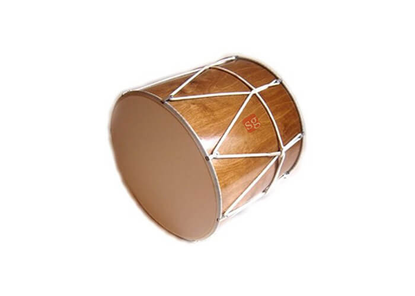
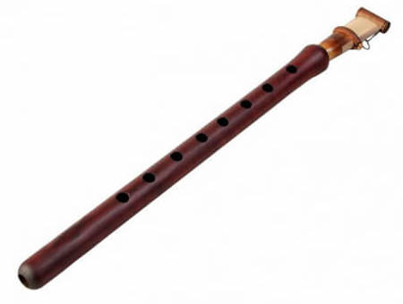
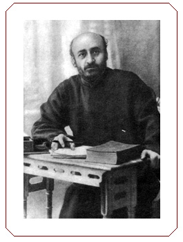
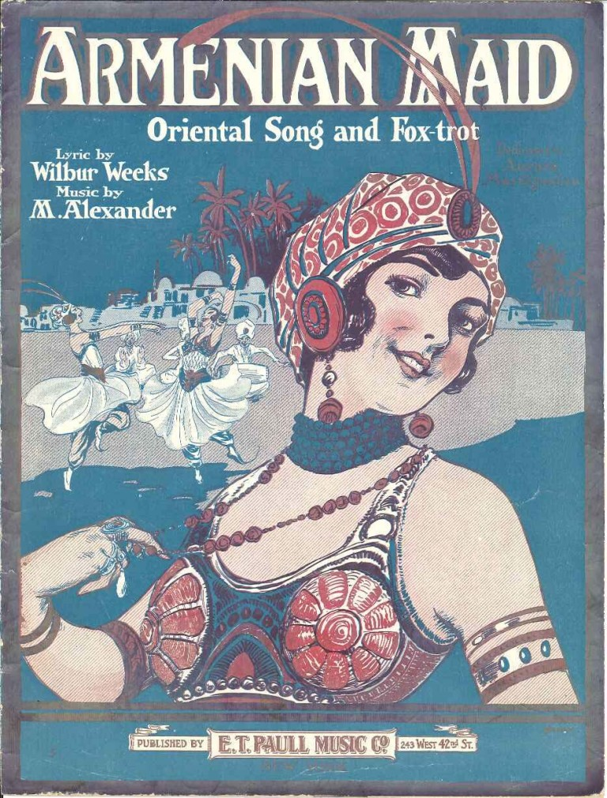
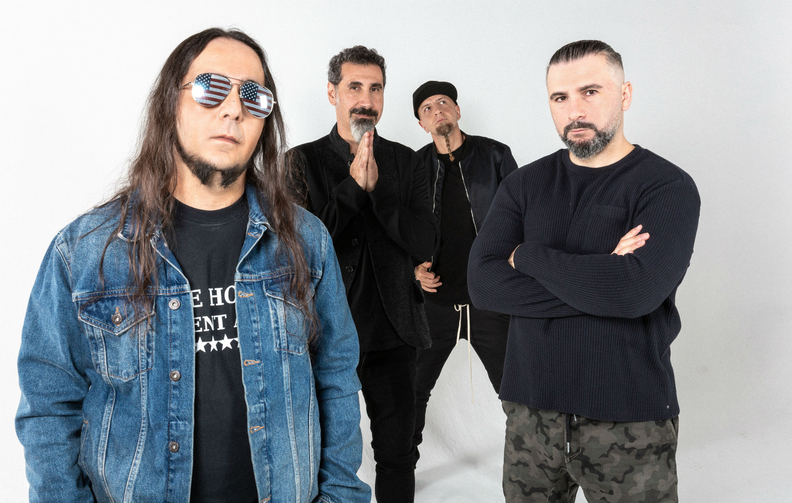

**Armenian Identity**
What is Armenian Identity? Surely a specific answer exists, but I would argue that a specific answer is a wrong answer. I would believe that for any culture, what gives something a cultural identity isn't something as rigid as the composer being related to said culture, or being created in a specific place. I agree with the argument brought up by Tchilingirian, where it is the intent, thought, and message behind a cultural creation that establishes that connection [1]. This allows it to be flexible should it change over time, and allows for those who feel disconnected to their culture to become a part of it.**Armenian Music System**
**Traditional Instruments**
*Some audio samples use OGG files from Wikimedia/Wikipedia. If it does not work on your browser (e.g., Safari), try a different one (Firefox, Chrome).* Although these instruments are common in Armenian music, they are not exclusive.

The dhol is a double-headed cylindrical drum with different membranes on each head. The membranes are typically made of goatskin or sheepskin. One membrane (thicker) creates a lower pitched sound, and the other membrane (thinner) creates a higher pitched sound.
Gomidas Vartabed ================
Gomidas at work
http://www.komitas.am/eng/gallery/photos/photos1.htm

Armenian Maid, a 1919 song that served to fundraise Armenian relief
https://arabkitsch.com/song-directory-2/239/armenian-maid/

From left to right: Serj, Shavo, Daron, John
Clemente Ruiz/Press
Alajaji, Sylvia. “Exilic Becomings: Post-Genocide Armenian Music in Lebanon.” Ethnomusicology 57, no. 2 (2013): 236-260.
Alajaji, Sylvia. *Music and the Armenian Diaspora: Searching for Home in Exile*. Indiana University Press, 2015.
Borcherdt, Donn. “Armenian Folk Songs and Dances in the Fresno and Los Angeles Areas.” Western Folklore 18, no. 1 (1959): 1-12.
Kassabian, Anahid. “Improvising Diasporan Identities: Armenian Jazz.” In Ubiquitous Listening: Affect, Attention, and Distributed Subjectivity, 73–83. University of California Press, 2013.
Kerovpyan, Aram and Kerovpyan, Virginia. “Music with Aram and Virginia Kerovpyan: Musical modes and the Armenian Eight-Mode system.” Armenian Institute. June 24, 2020. Video, 43:25. https://www.youtube.com/watch?v=XEY-JVq3BBM
Michaelian, Andranik and Steiner, Hermelinde. “Traditional music and instruments of Armenia.” Face Music. March 2016. http://www.face-music.ch/instrum/armenia_instrum_en.html
Tchilingirian, Hratch. “What is ‘Armenian’ in Armenian Identity.” The Armenian Mirror-Spectator. February 2018. https://mirrorspectator.com/2018/02/22/armenian-armenian-identity/
Vagramian-Nishanian, Violet. “Gomidas Vartabed: Pioneer Of Armenian Folk Music.” The Choral Journal 22, no. 3 (1981): 5-8.